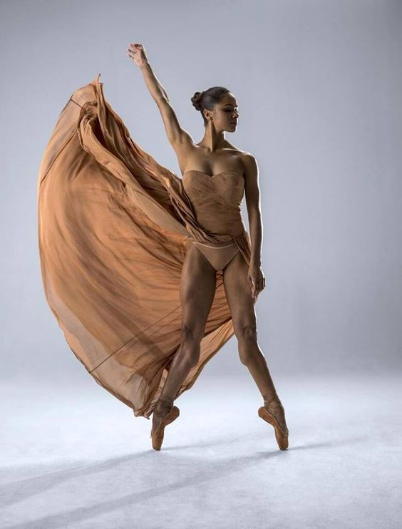

A dança é uma das formas mais belas e profundas da expressão corporal.
A dança é uma das formas mais belas e profundas da expressão corporal:
Dois dançarinos profissionais que me inspiram muito:
Através da dança é possível expressar qualquer sentimento.
Selecionei este vídeo demonstrativo de dois dançarinos profissionais.
Tipos de dança mais conhecidos da atualidade
| Exemplos de estilos de dança | |||
|---|---|---|---|
| Salsa | Jazz | Ballet | Contemporâneo |
| Kizomba | Street | Hip-Hop | Flamenco |